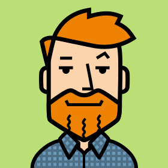
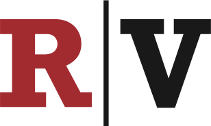
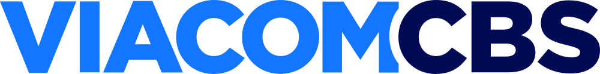
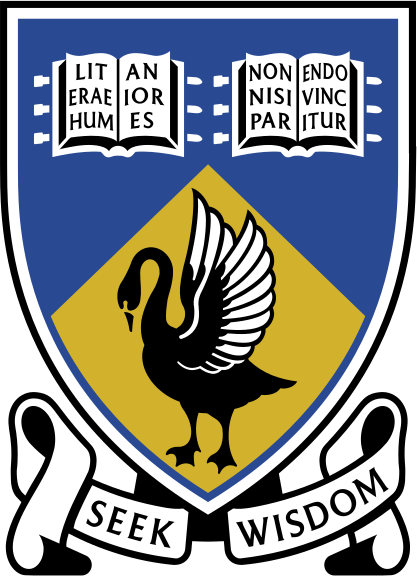
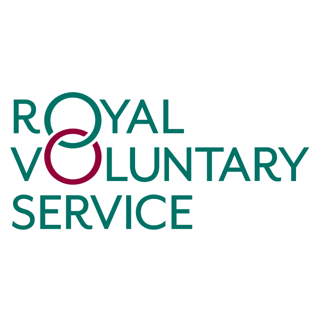

I'm a people manager and solutions architect with a background in world-class content management systems and online video workflows, backed by a decade and a half of experience with well-known, high-traffic, enterprise-level web properties created and maintained by globally distributed teams. I’m a strong proponent of high-quality, reusable, and maintainable solutions using SOLID design principles, unit testing, and continuous integration.
Current role

I manage the central Video engineering team in London and the US with contractors from South America. We’re tasked with building a new video ecosystem to support up to two billion video-on-demand (VOD) play sessions per year whilst handing live video, transcription/captioning, digital asset management, ads integration, and distribution/publishing. We support or are onboarding brands like CNET, ZDNet, GameSpot, GiantBomb, TV Guide, Healthline, and Lonely Planet. We work with vendors such as GCP, AWS Elemental, Fastly, Bitmovin, Rev.com, and Mux.com. The engineers build systems in Node.js (Express), PHP (Symfony), & Go/Golang (Goa), deployed with CircleCI on infrastructure managed with Terraform.
Previous roles
By acquisition from ViacomCBS, reporting to the VP of Engineering, I oversaw the migration of systems and workflows, including setting transition targets, undertaking vendor evaluations, and managing engineering deliverables & stakeholder expectations. I architected the replacement VOD solution based on GCP, Bitmovin and Fastly, which serves just shy of a billion video play sessions per year. Achievements include saving US$430,000 first year and US$275,000pa after that in costs for video content management by removing a vendor from our workflow with minimal impact on users and the business.

I was a team leader with direct reports, reporting to the VP of Engineering, part of a larger central CMS team of 13 engineers spread across the US, with support from product, PM, QA and DevOps. We maintained the CMS, REST APIs, and tech stack that powered web properties ViacomCBS operated internationally, including CBS News (inc. 60 Minutes), CBS Sports, 24/7 Sports, MaxPreps, SportsLine, CNET, ZDNet, TechRepublic, Download.com, TV Guide, and many more. My team were the subject matter experts on all video-on-demand (VOD) content - interfacing with internal and third-party vendors for transcoding, storage, metadata management, captioning/transcription, ingestion, publishing, and distribution (e.g., YouTube). Achievements include saving $500,000pa from video publishing costs, bypassing a third-party video platform, and avoiding the pay per play.
Initially based in Singapore as part of a team headed out of Sydney, we created and maintained web-based CMS that powered many of CBS Interactive's international brands. We built an adaptive and responsive CMS user interface with just a few engineers within two months. Out of that success, our teams merged with the US, creating one global team to cover all brands, charged with creating one CMS to power almost all of CBS' web properties, covering: broadcast, news, sports, tech, gaming, and food verticals. I led the video workflow integration whilst based in San Francisco for two months.
I was part of an international team developing and supporting CNET's non-US brands in the UK, Australia, Asia, Germany and France - including localised CNET and ZDNet brands. As a central team, we developed a framework used by local engineers in those countries, handling common scalability problems such as routing, caching and CDN integration. I also provided technical support for GameSpot, TV.com and TechRepublic. I delivered training in the Paris office to French and German teams; and presented our achievements at our off-site in Singapore.
I was part of the Customer Service Tools team within the Applications Dept., responsible for developing and maintaining internal web-based applications to manage customers and staff. We built and supported CRM, billing, HR, and B2B ordering & monitoring systems that integrated third-party telecommunication APIs to process broadband applications with upstream providers (Telstra). I was awarded 'Hardest Worker of the Year' in 2006.
I was a team leader in the contact centre, assisting and coaching junior customer service representatives, standing in for managers for customers with escalated technical or billing issues, identifying and lodging network-wide faults with operations and liaising with high-value clients. I created a set of web-based customer service tools, including a copper wire attenuation calculator based on raw telecommunications cable data to calculate the theoretical maximum DSL speed and a scheduling/roster user interface. The tools were used by all 700+ staff across Australian, NZ and South African offices. I was awarded 'Most Innovative Staff Member' in 2005.
I provided web development services for small to medium businesses, including hosting and domain name management. Based on my own CMS, I created and supported web properties from simple microsites to intranets and full shopping portals. I worked closely with clients, from concept and design to development, deployment, and support.
Oversaw IT operations, from desktop and server IT support to development, hosting and maintenance of their websites, intranet and other web-based tools. I provided on-site IT support, consulting and web development for their clientele.
Education

Volunteering
